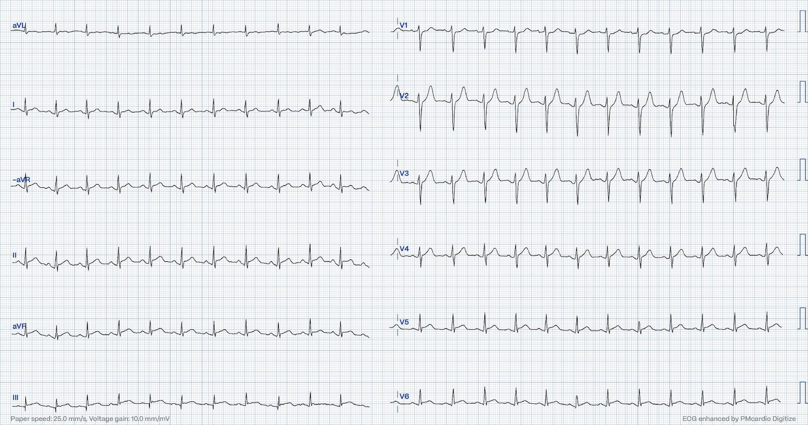
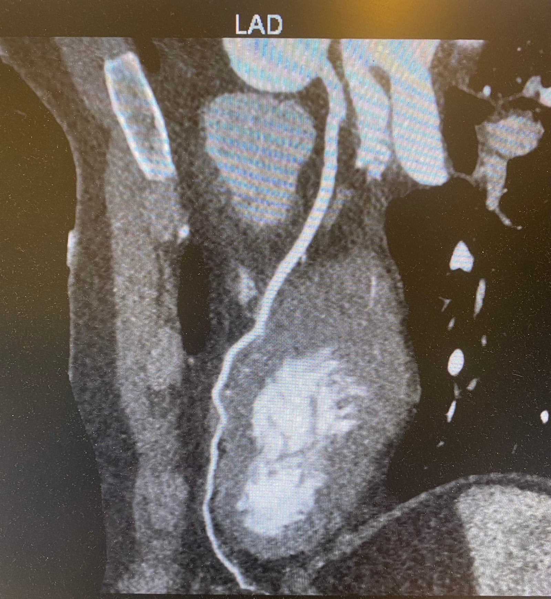
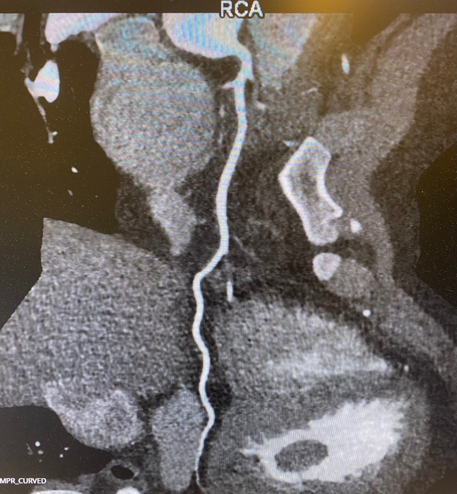
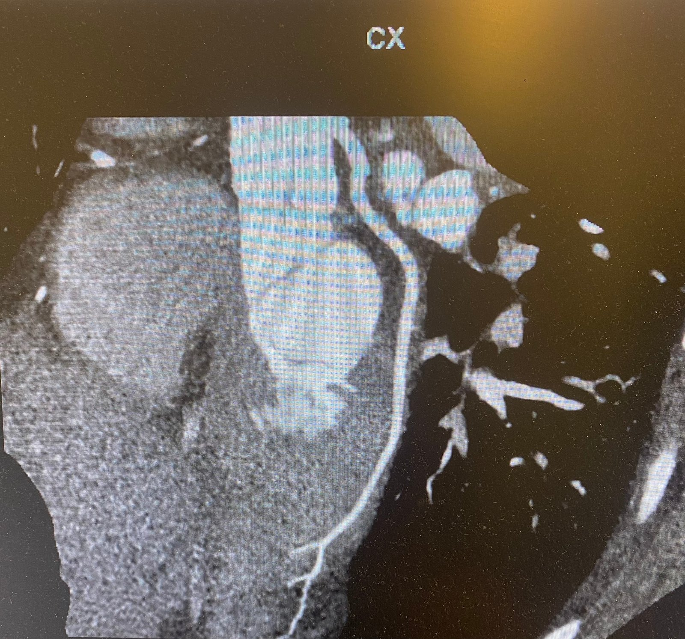
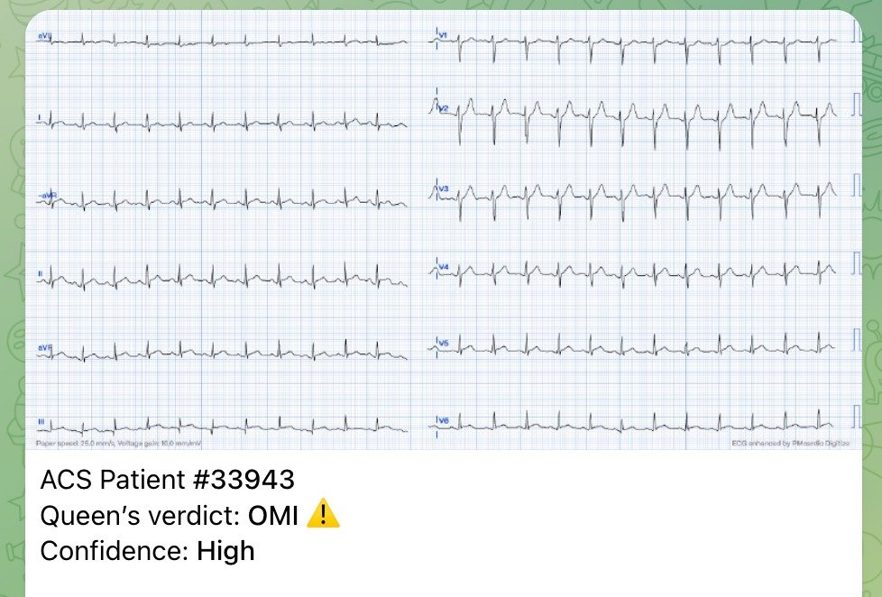
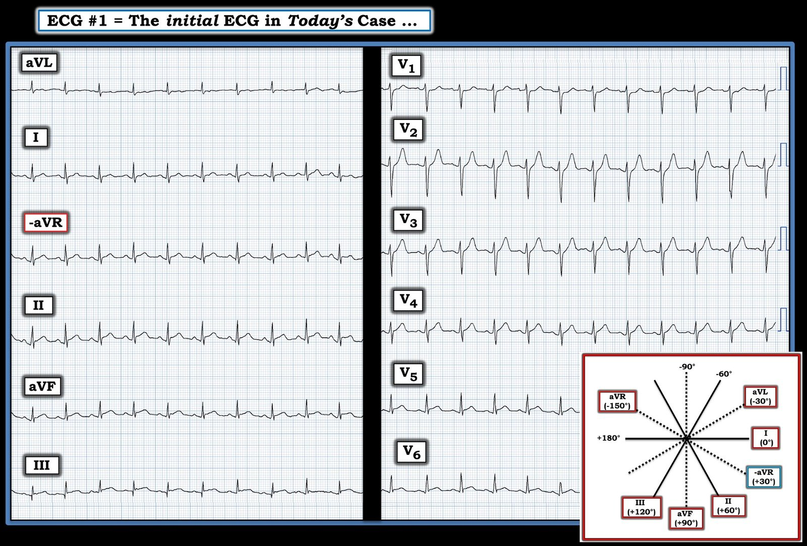

11/04/2024 — Nam 29 tuổi đau ngực, ST chênh lên và troponin T tăng rất cao
Bản dịch tiếng Việt của bài "A 29 year old male with chest pain, ST Elevation, and very elevated troponin T" – Dr. Smith’s ECG Blog. Giữ nguyên toàn bộ 8 hình ảnh của bản gốc.
Bởi Magnus Nossen
Điện tâm đồ này của một nam thanh niên không có yếu tố nguy cơ bệnh mạch vành (CAD), đến khám vì đau ngực. Bạn đánh giá điện tâm đồ này thế nào? Bạn tự tin đến mức nào vào đánh giá của mình? Bước tiếp theo của bạn là gì? Lưu ý: các chuyển đạo được trình bày theo định dạng Cabrera


Tôi được gửi điện tâm đồ này theo thời gian thực. Bệnh nhân là một nam thanh niên bị đau ngực. Cơn đau được mô tả là kiểu đè ép, lan ra cả hai tay và hàm. Triệu chứng lúc có lúc không. Cơn đau nặng hơn về đêm và đỡ hơn khi cử động. Bệnh nhân đi khám khi cơn đau tái phát sang đêm thứ hai liên tiếp, kèm tê tay cũng như đau lan. Điện tâm đồ trên được ghi lại.
Trong một ca như thế này, rất dễ nói là viêm màng ngoài tim. (nam thanh niên không có yếu tố nguy cơ và ST chênh lên ở nhiều chuyển đạo) Như Dr. Smith đã nhiều lần nhấn mạnh, khi chẩn đoán viêm màng ngoài tim là bạn đặt bệnh nhân và chính mình vào rủi ro. Đoạn ST chênh xuống ở V1 khiến tôi lo lắng, đoạn ST gần như đẳng điện (một cách không tương xứng) ở V2 còn khiến tôi lo hơn nữa. Kết hợp với ST chênh lên tối thiểu ở thành dưới và thành bên, tôi thấy mình phải loại trừ OMI dưới-sau-bên vì hậu quả có thể thảm khốc.
Tôi gửi ca này cho nhóm “EKG Nerdz” của chúng tôi và bất chấp lời cảnh báo thường lệ của mình, Dr. Smith nhắn tin lại: “Tôi xin liều mà nói rằng đây là ca giả (fake).”
2 đặc điểm quan trọng nhất theo Dr. Smith để phân biệt OMI với viêm màng ngoài tim là 1) không có ST chênh xuống soi gương ở bất kỳ chuyển đạo nào ngoại trừ aVR và 2) đoạn ST “dẹt”, nghĩa là không có sóng T lớn, có lẽ nói cụ thể hơn là tỷ lệ T/ST thấp.
Tôi chấp nhận chuyển bệnh nhân đến trung tâm PCI của chúng tôi. Khi đến nơi, bệnh nhân hơi nhịp nhanh. Tần số tim khoảng 90-100/phút. Các dấu hiệu sinh tồn khác bình thường. Không sốt. Siêu âm tim cầm tay cho thấy phân suất tống máu chung bình thường. Với EF bình thường thì nhịp nhanh không phải là bù trừ. Khi đó ACS trở nên ít khả năng hơn. Trước khi có kết quả xét nghiệm, bệnh nhân đã được chụp CT mạch vành cấp cứu và kết quả loại trừ bệnh mạch vành (CAD). Chẩn đoán cuối cùng là viêm cơ tim. Troponin T ban đầu có kết quả 1233ng/L. Viêm cơ tim có thể rất khó, thậm chí không thể phân biệt với OMI dựa trên các thay đổi điện tâm đồ. Điện tâm đồ có thể cho thấy ST chênh lên kèm thay đổi soi gương, và viêm cơ tim có thể có rối loạn vận động thành khu trú (WMA) trên siêu âm tim, y như OMI. Cần cân nhắc mạnh mẽ chụp mạch vành xâm lấn hoặc không xâm lấn cho nhóm bệnh nhân này. Một lần kích hoạt phòng thông tim (cath lab) dương tính giả tất nhiên cũng chấp nhận được với chẩn đoán này nếu bạn không thể chụp CT mạch vành cấp cứu.
Nhìn lại, có thể nói rằng ST chênh xuống ở V1 và ST chênh xuống tương đối ở V2 nhiều khả năng là soi gương với ST chênh lên lan tỏa. (Mối quan hệ soi gương tương tự cũng thấy trong thiếu máu cục bộ dưới nội tâm mạc nặng, chỉ khác là véc-tơ có hướng ngược lại, khi đó V1 có thể cho thấy ST chênh lên)
Dưới đây là mô hình 3D của tim và các mạch vành. Mỗi động mạch vành chính (LAD, RCA và LCx) được trình bày trong các hình riêng. Không có hẹp mạch vành.






Mô tả CCTA (chụp CT mạch vành): Chất lượng hình ảnh rất tốt. Không có hẹp mạch vành. Tràn dịch màng ngoài tim lượng rất ít.
Smith: đây là một cách sử dụng chụp CT mạch vành tuyệt vời!
Mô hình AI Queen of Hearts để đọc điện tâm đồ vẫn còn ở giai đoạn đầu. Kết quả đọc bản ghi hôm nay của cô ấy là OMI, độ tin cậy cao. Có lẽ rồi đây cô ấy sẽ có thể phân biệt viêm cơ tim với OMI chỉ dựa vào điện tâm đồ.
Bạn có nghĩ mình có thể làm tốt hơn phiên bản “chập chững biết đi” của mô hình AI này không? Hãy theo dõi blog vì sắp tới sẽ đăng một BÀI ĐỐ OMI để bạn tự kiểm tra so với Queen!
QoH xếp các điện tâm đồ vào hai nhóm OMI và KHÔNG PHẢI OMI (NOT OMI). Mỗi nhóm lại chia thành ba mức độ tin cậy. Như vậy bạn có thể nhận kết quả KHÔNG PHẢI OMI (thấp, trung bình hoặc cao). Hoặc bạn có thể nhận kết quả OMI (thấp, trung bình hoặc cao). Nói cách khác, có sáu kết quả đầu ra, với KHÔNG PHẢI OMI độ tin cậy cao ở một đầu và OMI độ tin cậy cao ở đầu kia.
Queen đã đọc ra sao?


Queen đã bị ca này đánh lừa!!
Phiên bản 1 chưa được huấn luyện để phát hiện viêm cơ tim hay viêm màng ngoài tim.
Phiên bản 2 sẽ làm được điều đó.
Ứng dụng Queen of Hearts PM Cardio hiện đã có mặt tại Liên minh châu Âu (được chứng nhận CE), trên App Store và Google Play. Với người Mỹ, bạn cần chờ FDA. Nhưng trong lúc chờ đợi:
BẠN CÓ CƠ HỘI ĐƯỢC TRUY CẬP SỚM BOT AI PM Cardio!! (ỨNG DỤNG AI OMI PM CARDIO)
Nếu bạn muốn bot này giúp bạn chẩn đoán sớm OMI và cứu bệnh nhân cùng cơ tim của họ, bạn có thể đăng ký nhận phiên bản beta sớm của bot tại đây. Bot chưa được phát hành, nhưng đây là cách để bạn có tên trong danh sách.
https://share-eu1.hsforms.com/18cAH0ZK0RoiVG3RjC5dYdwfyfsg (biểu mẫu đăng ký nhận phiên bản beta sớm)

===================================
BÌNH LUẬN CỦA TÔI, bởi KEN GRAUER, MD (11/4/2024):
===================================
Luyện tập nhận diện các bản ghi cấp tính cần được phân biệt với các hình ảnh giả OMI thì không bao giờ là thừa. Tôi xin bổ sung những suy nghĩ sau vào phần trình bày thú vị của Dr. Magnus Nossen.
- Để cho rõ, trong Hình 1 — tôi đã sao lại điện tâm đồ hôm nay. Tôi tô ĐỎ chuyển đạo thứ 3 bên trái để nhắc bạn đọc rằng đây là chuyển đạo -aVR (tương ứng với góc trục mặt phẳng trán = +30 độ) — trong điện tâm đồ này được trình bày theo định dạng Cabrera (Xem Bình luận của tôi ở cuối trang trong bài ngày 26 tháng Mười năm 2020 của Dr. Smith’s ECG Blog để ôn lại định dạng Cabrera).
- Ca này đầy thách thức vì bệnh nhân còn trẻ, đến khám vì đau ngực dữ dội — và vì các bất thường trên điện tâm đồ khá tinh tế. Ngoài các chuyển đạo V1,V2 mà Dr. Nossen lo ngại — tôi muốn bổ sung rằng có hiện tượng thẳng đuỗn của đoạn khởi đầu ST ở các chuyển đạo liên tiếp từ -aVR cho đến chuyển đạo III, mỗi chuyển đạo đều kèm điểm J và ST chênh lên tinh tế-nhưng-có-thật. (Có một sóng Q ở chuyển đạo III chưa rõ ý nghĩa).
- Bằng chứng ủng hộ rằng những dấu hiệu ST-T ở các chuyển đạo chi này là có thật đến từ đoạn ST dẹt hoàn toàn ở chuyển đạo aVL. Dù không phải hình ảnh “đối xứng gương ngược chiều” của mối quan hệ soi gương “kỳ diệu” giữa chuyển đạo III và chuyển đạo aVL thường thấy khi có OMI thành dưới cấp — tôi diễn giải hiện tượng sóng ST-T dẹt không điển hình này ở chuyển đạo aVL là một thay đổi ST-T soi gương.
- Hiện tượng thẳng đuỗn tương tự của đoạn khởi đầu ST, kèm ST chênh lên nhẹ, cũng thấy ở các chuyển đạo V5,V6.
- Và bệnh nhân có nhịp nhanh xoang … (khoảng ~100/phút).
ĐIỀU CỐT LÕI: Rõ ràng điện tâm đồ ban đầu này có đủ dấu hiệu để ủng hộ mối lo ngại của Dr. Nossen rằng cần đưa ra chẩn đoán xác định cho nam thanh niên bị đau ngực mới xuất hiện, kéo dài này. Troponin tăng cao đáng kể, siêu âm tim cho thấy chức năng thất trái bình thường không có rối loạn vận động thành khu trú — và chụp CT mạch vành âm tính, tất cả đều hướng tới viêm cơ tim cấp.
- Như đã nhấn mạnh nhiều lần trong Dr. Smith’s ECG Blog — đôi khi có thể không phân biệt được giữa viêm cơ tim cấp với OMI cấp dựa trên dấu hiệu điện tâm đồ và bệnh sử lâm sàng (Xem các Bình luận của tôi trong các bài ngày 25 tháng Tư năm 2023 — ngày 21 tháng Bảy năm 2019 — ngày 10 tháng Mười Hai năm 2019 — và ngày 10 tháng Một năm 2020).
- T.B. (P.S.): Chẩn đoán viêm cơ tim cấp (thay vì OMI cấp ) — “khớp” với ca này hơn nhiều vì: i) Bệnh nhân trẻ hơn bệnh nhân OMI thông thường — và mô tả cơn đau ngực của anh ấy có phần không điển hình; và, ii) Điện tâm đồ không hoàn toàn như chúng ta mong đợi ở một OMI dưới-sau cấp (tức là, có ST dẹt bất thường ở chuyển đạo aVL, nhưng không có hình ảnh thay đổi ST-T đối xứng gương ngược chiều như mong đợi so với chuyển đạo III — không có bất kỳ thay đổi ST-T soi gương nào ở chuyển đạo I — và chính chuyển đạo V1 chứ không phải V2,V3,V4 cho thấy đoạn ST thẳng đuỗn bất thường rõ rệt).

